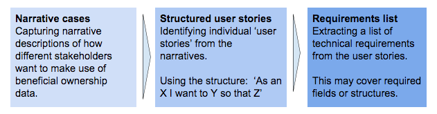

Research¶
When developing a policy-related open data standard, it is important to begin with an understanding of how policy and technology relate. Understanding this will help with identification of stakeholders, and the design of a research process to understand existing data supply, and user needs. This research can then inform an iterative development process.
Understanding the policy landscape¶
The development of a policy related open data standard may take place in a variety of different ways.
- Policy -> Standard - the standard is intended to support implementation of a policy framework that is already fixed. Creating the specification may require providing added specificity where the policy contains ambiguity, or may require faithfully representing the policy, even the gaps it contains.
- Parallel development - the standard and the policy are co-developed, feeding into each other. Sometimes the policy is embedded deeply within the technical specification; at other times, a looser coupling between policy and technical specification allows for the iterative development of both towards particular goals.
- Standard -> Policy - the standard is created, and then policy set that references the standard, or requires data is shared using it.
Examples¶
- Policy -> Standard The EU Standard Forms for Public Procurement support implementation of European Procurement Directives. The forms must include information specified for disclosure in the directives, and the forms cannot add new information requirements not covered in the directives.
- Parallel development Version 1.0 of the Open Contracting Data Standard provided a data model and a set of implementation levels used to assess the extent of data disclosure. A number of implementers made policy commitments to reach particular implementation levels.
- Standard -> Policy In some countries, transparency advocates have pushed for adoption of OCDS, writing adoption of the standard into policy.
Key questions¶
For any standard, identify:
- What is the policy goal of this standard?
- Who is involved in setting policy?
- How is policy set and revised?
It may also be useful to compile a short history of the policy context, in order to understand past efforts to increase disclosure or standardise data and information.
Stakeholder mapping & engagement¶
The development process for an open data standard needs to include a wide range of stakeholders, representing a range of different data producers, intermediaries and users. In particular, it is important to identify representatives with differing levels of capacity and operating in different contexts, in order to make sure the standard does not make unwarranted assumptions.
Example
During the development of the 360Giving standard, we held a workshop inviting a number of grantmakers, data specialists, government officials, transparency advocates and voluntary organisation staff. During the workshop we identified a long-list of other stakeholders who might use data on philanthropy.
Examples: 360Giving Demand Side Workshop Report
Resource: The Open Data Stakeholder Mapping tool developed for the Open Data in Developing Countries project describes how to run a participatory workshop to explore issues, datasets and stakeholders.
It is important to also develop clear channels of communication with stakeholders, recognising that different stakeholders will have different levels of interest in the standard development process.
Some of the possible communication channels include:
- A project website
- An e-mail newsletter
- A discussion list
- Twitter account
- Regular features in other sector-specific newsletters
When making key decisions about the standard development, it may be important to check that key stakeholder groups have been consulted. Stakeholders engaged during the development process may also become champions of the project during implementation.
Checklist¶
Have you:
- [ ] identified key stakeholder groups?
- [ ] identified representatives from each group to engage with?
- [ ] set up appropriate channels of communication to keep stakeholders updated?
Researching supply and demand¶
In the case of a policy-related open data standard, if you ask potential data users about what they want, you may get a long list of structured data demands. If you look at the data that data holders have, you will likely find a mismatch, with either data missing, or data held, but stored in unstructured forms.
An effective standard needs to find the right compromise between supply and demand: meeting as many user needs as possible, whilst placing realistic demands on data owners. If there is no means to incentivise or enforce new data collection by a data owner, there is no point in a standard relying on fields that are not currently held. And if a field is complicated and expensive to render in structured form, and it only meets a very limited number of user needs, it may be counter-productive to make it a major feature of a standard. For these reasons, standard development needs to be based on a clear understanding of both data supply and demand.
Supply side research¶
Supply side research aims to identify:
- Who is currently sharing data?
- What data is currently collected?
- How is data currently structured and stored?
- What level of existing standardisation is present?
- What fields and structures are common across different data owners?
This can take a variety of forms, but often involves collecting and analysing example data, and cross-mapping fields from different datasets to identify how often the same fields and concepts occur.
Examples¶
- From the development of 360 Giving, the Understanding Data Supply report looked at 707 different database fields from across 7 funders, identifying five fields common across all of them.
- The initial supply side scoping for the Open Contracting Data Standard identified common phases of the procurement process represented across 7 different datasets, chosen because they represented a range of levels of government capacity and different legal systems around the world. A visualisation was developed to illustrate the overlap between different source datasets, and support conversation about the feasibility of standardisation.
- The later supply side research for the Open Contracting Data Standard created an interactive tool to identify common fields across 20 different datasets. Creating this tool involved experiments with machine-learning to classify fields, and working to translate field titles from datasets in a range of languages.
Demand side research¶
Demand side research aims to identify:
- Who are the potential users of data?
- What do they want to achieve from data use?
- Which specific fields of data do they required?
- What other features of data will be important?
A number of tools from a user-centred design methodology can be deployed here such as:
- Personas
- Scenarios and
- Use-cases
Demand side research may involve a mix of interviews, desk research and workshops. It is important to ground the research in an understanding of the different tasks that users want to complete with access to standardised data, rather than to start from simply brainstorming data elements that users might be interested in.
Examples¶
During the development of the Beneficial Ownership Data Standard, a three-stage process was used to develop narrative use cases, before these were refined into structured user stories, and then used to generate a set of technical requirements for standard development.

Similar processes took place for 360 Giving and the Open Contracting Data Standard.
Resource: 360 Giving Demand Side Workshop Report
Resource: Open Contracting Data Standard Demand Side Assessment
Prior-art research¶
Before starting the detailed development of a new standard it is important to look at existing standardisation. This may be informed by desk research, and by looking at the standards in-use in existing datasets.
This involves looking for standards operating at a number of levels:
- Vocabularies and ontologies - that set out agreed terminology, definitions and codelists for a particular domain;
- Schema - that propose structures for the representation of particular data;
- Identifiers - looking at identification schemes in use in existing data;
- Data elements - looking at how particular data elements are modelled and encoded (e.g. data formats in use).
It may be appropriate to look at standards in related domains, or to look at cases where related problems have been solved in different sectors and settings.
It is important to check the licenses of any relevant existing standards to identify the extent to which the standard under development can build upon these.
Example
The Beneficial Ownership Data Standard - Desk Review looked at 32 different existing standards, based on key challenges identified from the initial standard scoping.